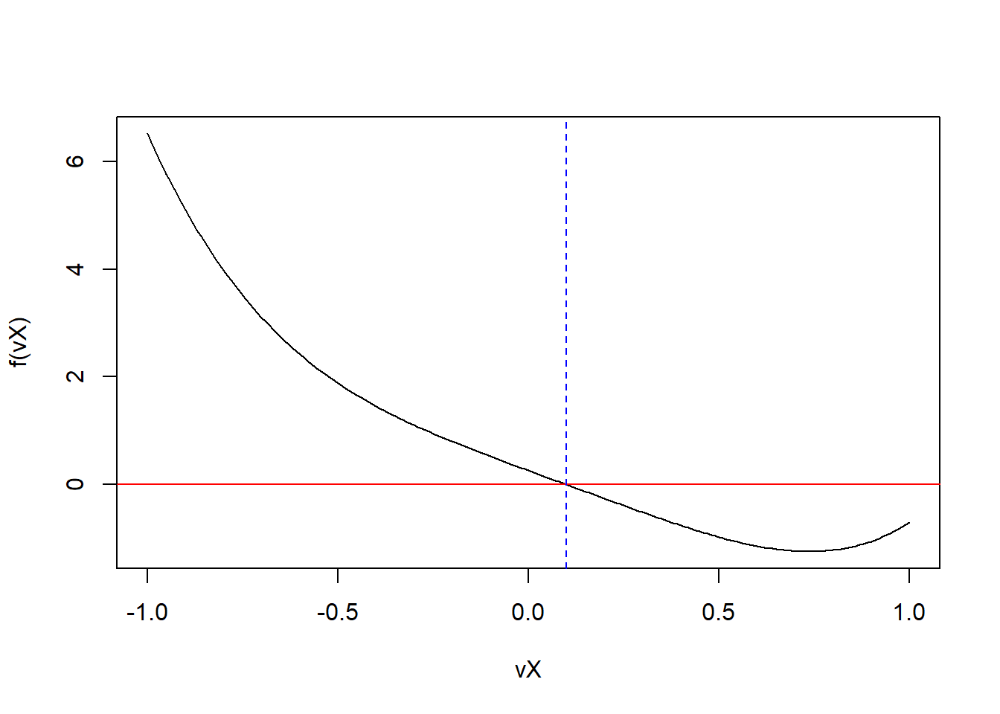
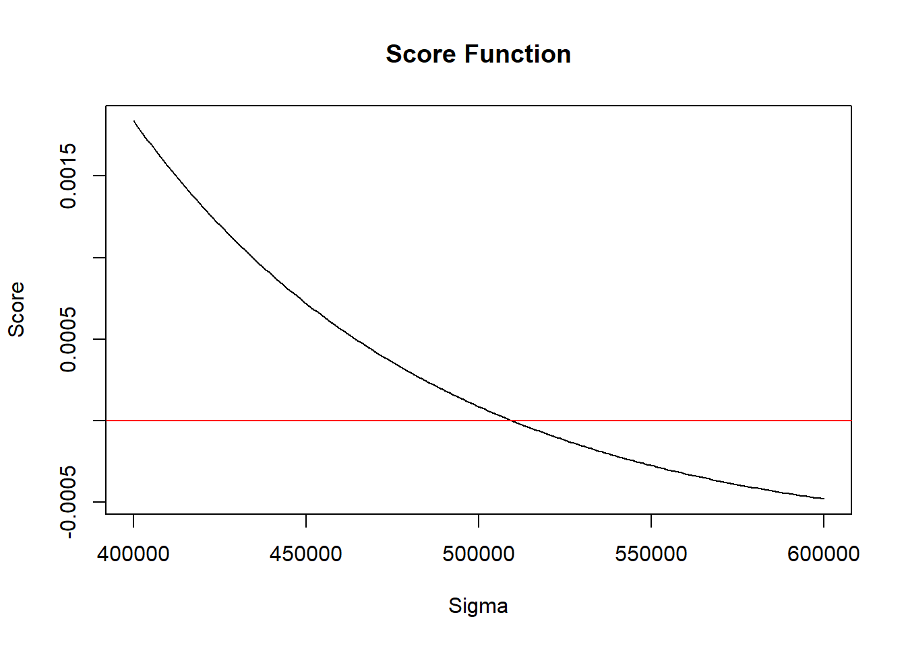

Write an R function that finds the root of a scalar function using the secant method. The function should also have two starting value inputs, optional inputs for secondary arguments of the input function, and not run indefinitely. It should return a list with the following elements:
the root
the function value at the root
the number of iterations used
a short description which stopping criterion was used and whether convergence as achieved
You can validate your results usinguniroot()with function:
\[
f(x)=-2.6(x-0.1)+2.5(x-0.1)^4
\]
where the root is in the interval\([-1,1]\). Use appropriate starting values.
Solution:
f<-function(dX){dOut<--2.6*(dX-0.1)+2.5*(dX-0.1)^4return(dOut)}fSecant<-function(f, dX0, dX1, dTol=1e-9, max.iter=1000, ...){iter<-0dX2<-dX1while((abs(f(dX2, ...))>dTol)&&(iter<max.iter)){dX2<-dX1-f(dX1, ...)*((dX0-dX1)/(f(dX0, ...)-f(dX1, ...)))dX0<-dX1dX1<-dX2iter<-iter+1cat("At iteration ", iter, "value of x is: ", dX1, "\n")}if(abs(f(dX2, ...))>dTol){return(list(root =NULL, f.root =NULL, iter =iter, "Algorithm failed to converge. Maximum iterations reached."))}else{return(list(root =dX2, f.root =f(dX2), iterations =iter, "Convergence reached."))}}root<-fSecant(f, dX0 =-0.5, dX1 =0.5)#> At iteration 1 value of x is: 0.1587413 #> At iteration 2 value of x is: 0.09544817 #> At iteration 3 value of x is: 0.1000008 #> At iteration 4 value of x is: 0.1root#> $root#> [1] 0.1#> #> $f.root#> [1] -1.941947e-13#> #> $iterations#> [1] 4#> #> [[4]]#> [1] "Convergence reached."uniroot(f, interval =c(-1,1))#> $root#> [1] 0.1000007#> #> $f.root#> [1] -1.764589e-06#> #> $iter#> [1] 6#> #> $init.it#> [1] NA#> #> $estim.prec#> [1] 6.103516e-05vX<-seq(-1, 1, 0.01)plot(vX, f(vX), type ="l")abline(h =0, col ="red")abline(v =root["root"], col ="blue", lty =2)

16.2(2)
You would like to obtain information about the (in)equality of the income distribution in population of people living in Denmark. For that you would like to estimate the standard deviation \(\sigma\) of the distribution of yearly income \(y_i^*\). You observe independent income data \(y_i\) for a sample \(i = 1, ..., n\). However, the observed data \(y_i\) has been modified to match data protection standards. In particular it has first been demeaned and then all units with income over \(c = 1.250.000\) DKK have been removed. This gives us the truncation mechanism:
To estimate the standard deviation, you assume that the true income \(y_i^*\) is normally distributed. This implies that the observed income \(y_i\) follows a truncated mean-zero normal distribution with density \(f(y)\):
\[f(y; \sigma, c) = \frac{1}{\sigma} \frac{\phi(y/\sigma)}{\Phi(c/\sigma)}, \quad -\infty < y \le c,\]
i.e. \(\phi(\cdot)\) and \(\Phi(\cdot)\) are the standard normal PDF and CDF respectively. To estimate \(\sigma\), we can setup the log-likelihood function
\[\ln L(\sigma; \mathbf{y}, c) = \sum_{i=1}^n \ln(f(y_i; \sigma, c)),\]
We want to find the estimate \(\hat{\sigma}\) which maximizes the log-likelihood function.
Write an R functionfTrunc()that finds the maximum likelihood estimator for\(\sigma\)using a Gauss-Newton algorithm. It should take the following inputs:
A numerical vector\(Y\)of length\(n\)containing the dependent variable.
A vector of starting values for the maximization with default being the sample standard deviation of\(Y\).
The number of maximum iterations for the optimization with default set to 200.
A tolerance level for the stopping criterion with default set to 1e-16.
The overall function should return a list with the following components:
The estimated parameter\(\hat{\sigma}\).
The log-likelihood, Score and Hessian at the optimum.
A character containing information about convergence and stopping condition of the optimization.
Load the dataQPE_income1.Rinto R usingreadRDS()and estimate\(\hat{\sigma}\). The solution should be 509699.8.
Try out a range of different starting values above and below the default. Plot the Score and Hessian along a grid of different\(\sigma\)values. What do you observe?
Solution:
f<-function(vY, dSigma, dC){return((1/dSigma)*((dnorm(vY/dSigma))/(pnorm(dC/dSigma))))}fScore<-function(vY, dSigma, f, dC){return(((-1*length(vY))/dSigma)+(1/dSigma^3)*(sum(vY^2))+((dC*length(vY))/(dSigma))*f(dC, dSigma, dC))}fHessian<-function(vY, dSigma, f, dC){return(length(vY)/dSigma^2-(3/dSigma^4)*sum(vY^2)+(dC^3*length(vY)/dSigma^4-2*dC*length(vY)/dSigma^2)*f(dC, dSigma, dC)+(dC^2*length(vY)/dSigma^2)*f(dC, dSigma, dC)^2)}fTrunc<-function(f, fScore, fHessian, vY, start.val=sqrt(var(vY)), n.max=200, dTol=1e-16, ...){n<-0dParam<-start.val# Keep updating until stopping criterion or max iterations reachedwhile((abs(fScore(vY, dParam, f, ...))>dTol)&&(n<n.max)){# Newton-Raphson updatingdParam<-dParam-fScore(vY, dParam, f, ...)/fHessian(vY, dParam, f, ...)n<-n+1#cat("At iteration", n, "the value of the parameter is:", dParam, "\n")}if(n==n.max){return(list( param =NULL, log.likelihood =NULL, score =NULL, hessian =NULL, iter =n, msg ="Algorithm failed to converge. Maximum iterations reached."))}else{return(list( param =dParam, log.likelihood =sum(log(f(vY, dParam, ...))), score =fScore(vY, dParam, f, ...), hessian =fHessian(vY, dParam, f, ...), iter =n, msg ="Algorithm converged"))}}vX<-readRDS("QPE_income1.R")results<-fTrunc(f, fScore, fHessian, vX, dC =1250000)results#> $param#> [1] 509699.8#> #> $log.likelihood#> [1] -19280.04#> #> $score#> [1] -5.692061e-19#> #> $hessian#> [1] -8.458564e-09#> #> $iter#> [1] 4#> #> $msg#> [1] "Algorithm converged"# Plot Score and HessiansigmaVals<-seq(400000, 600000, length.out =200)scoreVals<-sapply(sigmaVals, function(sigma)fScore(vX, sigma, f, dC =1250000))hessianVals<-sapply(sigmaVals, function(sigma)fHessian(vX, sigma, f, dC =1250000))# Plot Scoreplot(sigmaVals, scoreVals, type ="l", main ="Score Function", xlab ="Sigma", ylab ="Score")abline(h =0, col ="red")

# Plot Hessianplot(sigmaVals, hessianVals, type ="l", main ="Hessian Function", xlab ="Sigma", ylab ="Hessian")abline(h =0, col ="red")